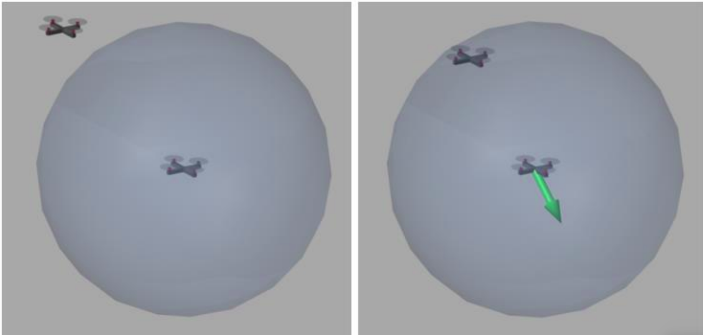

Publications
Dynamic Sampling RRT for
Improved Performance in Large Environments
This publication was during the work on my master's degree project.
While working on path planning for quadcopters in the swarm, I found that the random sampling methods were the most effective.
but the standard RRT algorithm (Rapidly-exploring random tree) was not enough
in large and complex environments, and it struggled to find small passages in
very large environments. So I developed an improvement for this algorithm
which increased its efficiency in large environments.
I described the algorithm and reported the testing results in the paper
"Dynamic Sampling RRT for Improved Performance in Large Environments"
which was published in the 2020 IEEE International Conference on Mechatronics and Automation (ICMA).
Collision Avoidance
algorithm for a quadcopters swarm
During the work on my master's degree project, I worked on an algorithm for collision avoidance algorithm for the quadcopters in the swarm. I developed an algorithm based on repulsive force, tested it, and reported the results in the paper "Collision avoidance algorithm for a quadcopters swarm" which was published in 2019 In AIP Conference Proceedings.
